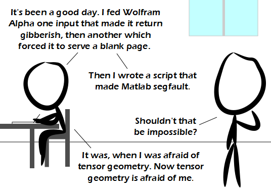

Comic JK 827
When I Feel Like It
⇤
<
?
>
⇥

⇤
<
?
>
⇥
Forum
.
RSS
.
Digg
.
Facebook
.
Reddit
.
Twitter
.
Stumbleupon
Enter your thoughts on number 827 here. Please, no spamming, trolling, phreaking, or showing RSS who's boss. Your mother makes my Commodore 64 segfault. what were these scripts? If you manage to segfault you shouldn't be proud you should be very very ashamed. >There's no shame in completing a task that was once thought impossible. >>Managing to segfault a system which shouldn't segfault is cause for celebration >>>Especially since Matlab is memory managed, etc and thus if it were properly designed wouldn't segfault on any input >>>>Yes, I would be impressed if someone could consistently segfault MATLAB. It's easy to make is simply lock up or run out of memory but not segfault. >>>>>I have seen some do it and debugged their code to fix it. They did not run out of memory or just plainly lock up. It was one of the most annoying things to track down. While it is impressive to manage when you have a deadline it's not exactly the best use of your time. >>>>>> There's no shame in making something segfault. Making something that segfaults is another matter. >>>>>>>+1 >>>>>>>>+1 >>>>>>>>>+1 828 still points to 827... <-So does 829, as does 899 >He doesn't believe in 404s >> Didn't it used to give us some junk about being in the future? >>> 404: File Not Found. The date was just a coincidence. Really. >>>funfact: if you go to comic 404 and try to comment on it, you get a 404 error >>>>Yeah, because it still points to forum.php instead of ../comment_box.php or whatever the files are